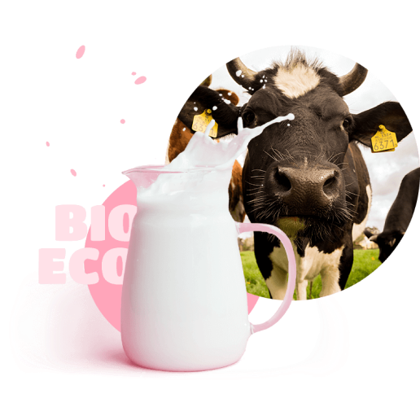

tradition and love
how it’s made?

Fusce ut velit laoreet, tempus arcu eu, molestie tortor. Nam vel justo cursus, faucibus lorem eget, egestas eros. Maecenas eleifend erat at justo fringilla.
Curabitur lacinia enim at ex blandit, vel pellentesque odio elementum. Mauris rhoncus orci in imperdiet placerat. Vestibulum euismod nisl suscipit ligula volutpat, a feugiat urna maximus. Cras massa nibh, tincidunt.
Aliquam erat volutpat. Aenean accumsan.